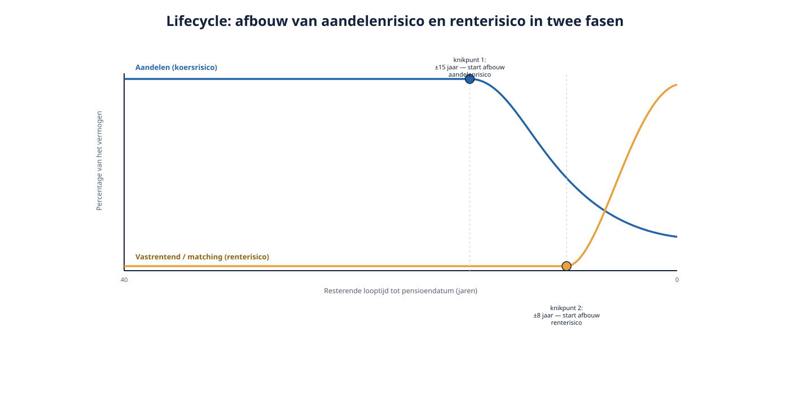

Deel 12 — Producten, lifecycles en kosten
Niveau 2 · Uitvoering en advies · Deelnemersreader
12.1 Leerdoelen
Na dit deel kun je:
- het lifecycle-principe uitleggen en de drie standaardprofielen onderscheiden;
- beschrijven hoe het risico in een lifecycle afbouwt naarmate de pensioendatum nadert, en waarom dat in twee fasen gebeurt;
- de kostencomponenten van een pensioenproduct benoemen en herkennen in een offerte;
- het onderscheid maken tussen een garantiecontract en een beleggingsproduct zonder garantie;
- twee offertes met hetzelfde premiepercentage inhoudelijk vergelijken;
- een productadvies voor Van Doorn Techniek onderbouwen met een concrete afweging tussen kosten, garanties en verwacht rendement.
12.2 Van premie naar pensioen: wat er tussen zit
In deel 11 rekende je de premie uit. Dit deel behandelt wat er ná de premie-inleg gebeurt, tot aan de pensioendatum: hoe wordt het geld belegd, wat kost dat, en wat is er gegarandeerd? Twee offertes met exact hetzelfde premiepercentage kunnen tot een wezenlijk verschillend pensioenresultaat leiden. Wie alleen naar het premiepercentage kijkt, vergelijkt de helft van het aanbod.
12.3 Het lifecycle-principe
In een premieregeling met beleggingsvrijheid (de flexibele premieregeling, deel 3) wordt de ingelegde premie niet statisch belegd, maar volgens een lifecycle: de beleggingsmix verandert automatisch naarmate de deelnemer dichter bij zijn pensioendatum komt.
De gedachte erachter. Een deelnemer met een lange horizon kan koersschommelingen opvangen — er is tijd om een slechte periode goed te maken. Een deelnemer vlak vóór pensionering heeft die tijd niet meer: een koersdaling in het laatste jaar is niet meer te herstellen vóór het kapitaal moet worden omgezet in een uitkering. De lifecycle bouwt het risico daarom geleidelijk af.

Twee soorten risico, twee afbouwfasen. Dit is de kern die vaak wordt gemist: er wordt niet één risico afgebouwd, maar twee, in twee fasen.
- Aandelenrisico (koersrisico). Wordt als eerste afgebouwd, doorgaans vanaf ruim vijftien jaar vóór de pensioendatum. Aandelen worden geleidelijk ingeruild voor obligaties.
- Renterisico. Wordt pas in de laatste jaren vóór pensionering relevant en dan actief afgebouwd, doorgaans vanaf ongeveer acht jaar vóór de pensioendatum. De gedachte: het kapitaal moet op de pensioendatum worden omgezet in een uitkering, tegen de dan geldende rente. Daalt de rente in de laatste jaren, dan kan er minder pensioen worden ingekocht — ook al is er niets mis met de aandelenkoersen. Om dát risico te beperken, wordt in de laatste jaren belegd in instrumenten die meebewegen met de rente.
Concreet, bij een neutraal profiel: in de laatste fase, vanaf circa acht jaar voor de pensioendatum, wordt een groot deel van het kapitaal belegd in renterisicoreductie — op de pensioendatum zelf circa 80% daarin en 20% in laag risico.
12.4 Drie standaardprofielen
Vrijwel elke uitvoerder biedt drie varianten:
Defensief. Minder risico dan het gemiddelde profiel; een kleiner deel in aandelen, eerder en sterker afgebouwd. Bijvoorbeeld: 90% in laag risico en 10% in hoog risico gedurende de opbouwperiode. Kleinere kans op een hoog eindresultaat, kleinere kans op een tegenvaller.
Neutraal. Het standaardprofiel, afgestemd op de gemiddelde deelnemer. De meeste uitvoerders plaatsen een nieuwe deelnemer hier automatisch, tenzij hij zelf kiest.
Offensief. Meer risico, met een grotere kans op een hoger pensioen én een grotere kans op een tegenvaller. Bijvoorbeeld: 95% in hoog risico en 5% in laag risico gedurende de opbouwperiode, met circa 5% hoger verwacht pensioen maar ook een grotere kans op een daling in de laatste jaren vóór pensionering.
De keuze is aan de deelnemer, ondersteund door een risicoprofielvragenlijst of keuzehulp die de uitvoerder aanbiedt. Wie niet kiest, valt in het standaardprofiel — meestal neutraal, soms defensief, afhankelijk van de uitvoerder.
Vast of variabel pensioen als extra dimensie. Sommige uitvoerders combineren het risicoprofiel met de keuze tussen een vaste of een variabele uitkering later (deel 13): bij een gekozen vaste uitkering start de renteafbouw eerder dan bij een gekozen variabele uitkering, omdat bij een vaste uitkering het rendement- en renterisico op de pensioendatum wordt “bevroren”, terwijl bij een variabele uitkering het beleggen na de pensioendatum doorloopt. Dat maakt de lifecycle-keuze en de uitkeringskeuze in de praktijk met elkaar verweven — een deelnemer die nog niet weet welke uitkeringsvorm hij wil, kan dat lastig los zien van zijn huidige lifecycle-instelling.
12.5 Wie kiest, en wat als niemand kiest?
De werkgever kiest bij het afsluiten van het contract het standaardprofiel voor de regeling — vaak neutraal, soms defensief bij een risicomijdende sector. Individuele deelnemers kunnen daarvan afwijken via een eigen keuze, ondersteund door de keuzebegeleiding die de uitvoerder wettelijk moet bieden (deel 17).
In de praktijk kiest de overgrote meerderheid van de deelnemers nooit actief en blijft in het standaardprofiel. Dat maakt de keuze van het standaardprofiel door de werkgever een belangrijke, vaak onderschatte beslissing: hij bepaalt daarmee feitelijk het beleggingsbeleid voor het grootste deel van zijn personeel.
Aandachtspunt bij de transitie. Bij het omzetten van een regeling (deel 6 en 15) verhuist niet automatisch elke deelnemer naar dezelfde nieuwe lifecycle-instelling; controleer of bestaande individuele keuzes worden gerespecteerd of dat er een nieuwe keuze moet worden gemaakt. Dit is een detail dat in een implementatieplan makkelijk wordt vergeten en dat voor een deelnemer die bewust voor defensief had gekozen, een vervelende verrassing kan zijn.
12.6 Kostencomponenten
Een pensioenproduct kent doorgaans drie soorten kosten, en zij zijn niet in elke offerte even zichtbaar.
1. Vermogensbeheerkosten (TER — total expense ratio). Het percentage dat jaarlijks van het belegde vermogen wordt ingehouden voor het beheer van de onderliggende beleggingsfondsen. Dit percentage werkt door in het eindresultaat op een manier die deelnemers structureel onderschatten: een verschil van 0,5 procentpunt TER lijkt klein, maar werkt over dertig jaar cumulatief door tot een merkbaar lager eindkapitaal.
2. Poliskosten / administratiekosten. Vaste of premie-afhankelijke kosten voor de administratie van de regeling: een vast bedrag per deelnemer per jaar, een percentage van de premie, of een combinatie.
3. Kosten voor risicodekkingen. De premie voor partnerpensioen, wezenpensioen en arbeidsongeschiktheidsdekkingen (deel 8) is een aparte component, soms apart gefactureerd, soms verwerkt in het totale premiepercentage. Controleer dit altijd, want het raakt direct de 30%-toets uit deel 11.
Waar kosten meestal bij werkgever of bij deelnemer liggen. In veel verzekerde regelingen betaalt de werkgever de poliskosten en administratiekosten, terwijl de vermogensbeheerkosten in de fondsen zelf zitten en dus het rendement van de deelnemer raken. Dit onderscheid is precies waarom “onze werkgever betaalt alle kosten” niet betekent dat er geen kosten voor de deelnemer zijn.
Vergelijken. Twee offertes met hetzelfde premiepercentage kunnen wezenlijk verschillen in netto resultaat door verschillen in TER en poliskosten. Vraag bij elke offerte expliciet naar:
- de TER per beleggingsfonds in de lifecycle, niet alleen een gemiddeld cijfer;
- de poliskosten, uitgedrukt in een bedrag per deelnemer per jaar én als percentage;
- of de kosten voor risicodekkingen apart zijn vermeld of verdisconteerd in het premiepercentage.
12.7 Garanties: wat een verzekeraar wel en niet garandeert
Dit is het onderwerp waarop verzekeraars zich het duidelijkst onderscheiden van PPI’s, en waarop binnen de verzekeraarsmarkt de producten het meest uiteenlopen.
Beleggingsverzekering zonder garantie. De premie wordt belegd volgens de gekozen lifecycle; het resultaat is volledig afhankelijk van het beleggingsrendement. Vergelijkbaar met wat een PPI biedt, met als verschil dat de verzekeraar ook de risicodekkingen (deel 8) direct kan meeleveren binnen hetzelfde contract.
Garantiecontract. De verzekeraar garandeert een minimumrendement of een minimumkapitaal op de pensioendatum, tegen een prijs: hogere kosten of een lager verwacht rendement bij een gunstig koersverloop. Garanties komen in gradaties — een garantie op de premie-inleg (nominaal kapitaalbehoud) is iets anders dan een garantie op een vast rendementspercentage.
De afruil. Zekerheid kost rendement. Dit is dezelfde afruil die je in deel 3 zag bij de premie-uitkeringsovereenkomst: garanderen betekent voor de verzekeraar kapitaal aanhouden onder Solvency II, en dat kost geld dat ergens vandaan moet komen — uit de premie, uit het verwachte rendement, of uit beide.
Wanneer een garantie past. Voor een bestand met een hoge gemiddelde leeftijd en beperkte risicotolerantie kan een garantiecontract passend zijn, ook al is het verwachte eindresultaat lager. Voor een jong bestand met een lange horizon is de garantie vaak geld weggegeven aan zekerheid die nog niet nodig is — de lifecycle bouwt het risico toch al af tegen de tijd dat het ertoe doet.
12.8 PPI versus verzekeraar: het productverschil concreet
Terugkijkend naar deel 1 en deel 3, hier het verschil op productniveau:
| PPI | Verzekeraar | |
|---|---|---|
| Beleggingsproduct | ja, vergelijkbaar lifecycle-aanbod | ja, vergelijkbaar lifecycle-aanbod |
| Garantiecontract | nee — geen verzekeringstechnisch risico toegestaan | ja, als aparte of gecombineerde optie |
| Risicodekkingen | herverzekerd bij een verzekeraar, apart zichtbaar | vaak in hetzelfde contract geïntegreerd |
| Premie-uitkeringsovereenkomst | nee | ja |
| Kostenstructuur | doorgaans transparanter, vaak lager | wisselend, soms met bundelvoordeel |
Voor Van Doorn Techniek, met een gemiddelde leeftijd van 46 en een gemengd bestand van jong (Yasmin) tot vlak-voor-pensionering (Karel), ligt een keuze voor een lifecycle-product zonder volledige garantie, met een individuele keuzevrijheid voor risicoprofiel, het meest voor de hand — mits de kosten scherp zijn en de risicodekkingen helder apart zichtbaar blijven.
12.9 Wat je in een offertevergelijking checkt
- Premiepercentage — al bekend uit deel 11, het startpunt, niet het eindpunt van de vergelijking.
- Lifecycle-aanbod — hoeveel profielen, welk standaardprofiel, wanneer starten de twee afbouwfasen.
- TER per fonds — niet alleen een gemiddelde.
- Poliskosten — bedrag en wie betaalt.
- Risicodekkingen — apart zichtbaar of verdisconteerd; dekkingspercentages conform het kader uit deel 8.
- Garantieniveau — aanwezig of niet, en tegen welke prijs.
- Keuzevrijheid en keuzebegeleiding — kan een deelnemer zelf kiezen, en hoe wordt hij daarbij begeleid.
- Contractvoorwaarden — looptijd, opzegtermijn, wat er gebeurt met het kapitaal bij beëindiging (deel 2).
Punt 8 sluit de cirkel naar deel 2: een product kan inhoudelijk uitstekend zijn en toch een probleem opleveren als het contract een ongunstige opzegtermijn of afwikkeling kent.
12.10 Kernbegrippen
| Begrip | Betekenis |
|---|---|
| Lifecycle | Automatisch aangepaste beleggingsmix naarmate de pensioendatum nadert |
| Aandelenrisico-afbouw | Eerste afbouwfase, doorgaans vanaf ruim vijftien jaar vóór pensionering |
| Renterisico-afbouw | Tweede afbouwfase, doorgaans vanaf circa acht jaar vóór pensionering |
| TER (total expense ratio) | Jaarlijkse vermogensbeheerkosten als percentage van het belegd vermogen |
| Poliskosten | Administratiekosten van de regeling |
| Garantiecontract | Product met een gegarandeerd minimumrendement of -kapitaal |
12.11 Samenvatting
- De lifecycle bouwt twee verschillende risico’s af, in twee fasen: eerst aandelenrisico, later renterisico.
- Drie standaardprofielen — defensief, neutraal, offensief — met de werkgever als kiezer van het standaardprofiel en de deelnemer als (zelden gebruikte) individuele kiezer.
- Kosten bestaan uit vermogensbeheerkosten, poliskosten en kosten voor risicodekkingen; kleine verschillen in TER werken cumulatief door.
- Een garantie kost rendement; of dat de juiste afruil is, hangt af van het bestand.
- PPI’s mogen geen garanties bieden en geen verzekeringstechnisch risico dragen; verzekeraars wel.
- Vergelijk offertes op acht punten, niet alleen op het premiepercentage.
Doorkijk naar deel 13. Het kapitaal is opgebouwd, de pensioendatum nadert. Deel 13 behandelt wat daarmee gebeurt: de keuze tussen een vaste en een variabele uitkering, het shoprecht, en het projectierendement waarmee een variabele uitkering wordt berekend.